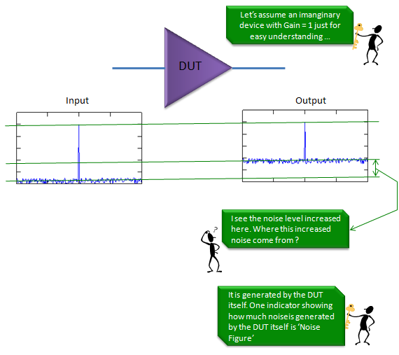
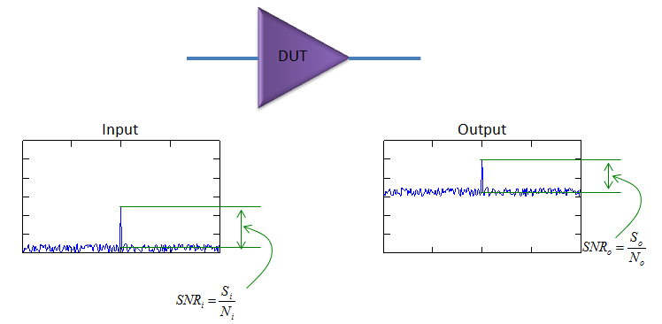
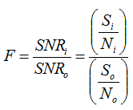
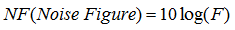
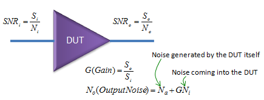
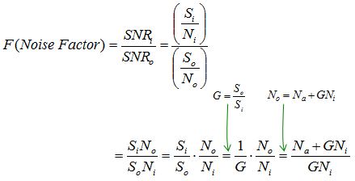

|
RF - Noise Figure Home : www.sharetechnote.com |
|
When you think about 'Noise', usually you think noise is coming from somewhere outside. It would be true, but there are some portions of noise that is generated by a component (DUT) itself. Unless a device is working at absolute temperate zero (-273 degree in celcius), there always are such a noise generated by an object itself. In most case, we just ignore this kind of noise largely because the strength of the noise is not so big to interfere the signal strength, but there are some cases where we cannot ignore these noise generated by the component itself. For that kind of situation, they made a specification (indicator) to measure/manage/control this type of noise, that indicator is called 'Noise Figure' and 'Noise Factor'. Physically Noise Figure and Noise Factor indicator the same thing, the only difference is that Noise Figure is log scale (dB) and Noise Factor is linear scale.
Now let's get into a little bit details of Noise Figure. Let's assume that you have an imaginary device with Gain = 1 meaning it is not amplyfing anything coming into the device and it is completely pretected from any external noise source. Assume that you put an input as shown on the plot on the left and got the output as shown on the plot on the right. Do you see any difference ? Yes... I don't see anything different in terms of size of signal peak and it is understandable since this is a device with Gain = 1. But what about the noise floor ? You would notice pretty big difference between the noise floor of input and the noise floor of output. Why it changed like this ? Since we assume that this is an ideal device which is completely protected from external noise, the only possibility we can think of is that the noise is generated by the DUT itself. Noise Figure indicates the amount of this kind of internal noise.

How can we express this noise figure in formal way ? If the gain of the device is always 1, the simplest way to express it would be the 'difference between input noise level and output noise level'. But if the Gain is not 1 (greater than 1), just looking at the noise level difference you don't know whether the increased noise level is due to the amplification or internal generation. In this case, the better way to estimate the internal noise generation is to compare SNR (signal to noise ration) as shown below.

In conclusion, they came out with an indicator called 'Noise Factor' which is defined as the ratio of input SNR and output SNR' as shown below.

Noise figure is just log scaled value of Noise Factor as shown below.

This is all about the noise figure, but if you want to play more with math. Noise Floor can be derived from the Gain (G), input noise (Ni) and the internally generated noise (Na) as shown below.


Whatever the way you use, once you get noise factor, getting the noise figure (NF) is automatic. Just take the log scale of it as shown below.
|